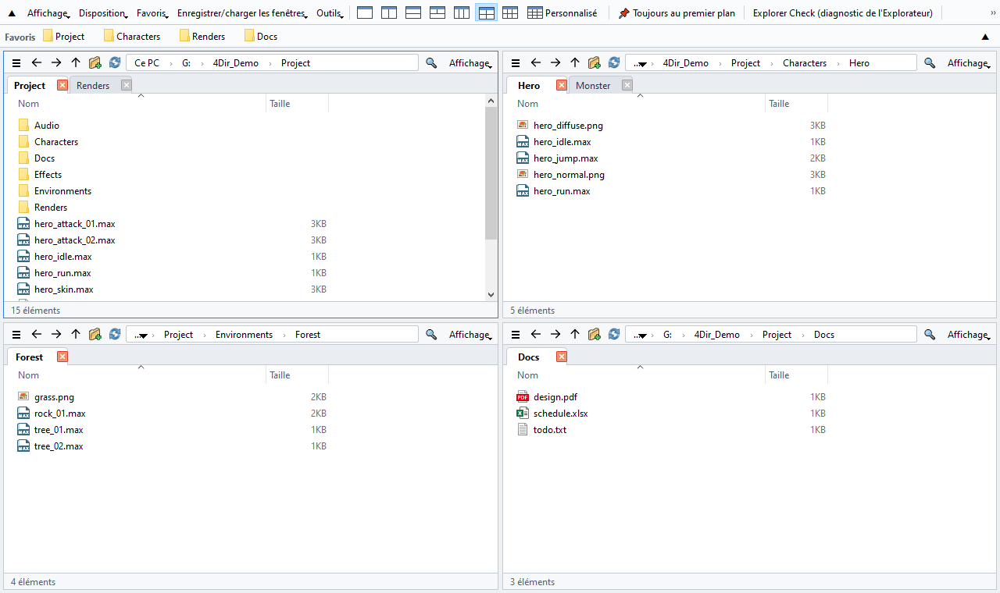
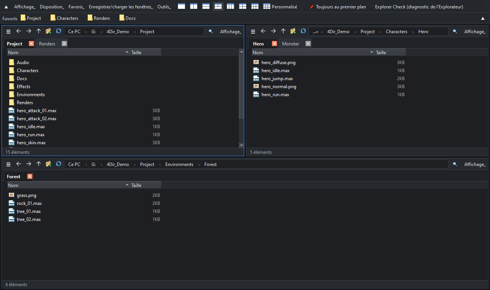

Jusqu'à 20 volets. Des onglets dans chaque volet. Léger pour votre PC.
Plus rapide que l'Explorateur de fichiers Windows !!
Gestionnaire de fichiers gratuit pour Windows 10/11. Sans installation : décompressez et lancez.
Windows 10/11 64 bits · 33 MB · 2026-10-24 · gratuit
Nouveautés de la v0.9.66
- Clic droit sur un fichier .webp → Convertir le WebP → Enregistrer en PNG / Enregistrer en JPG. Le fichier d'origine reste intact.
- Les éléments ajoutés par 4Dir au menu contextuel affichent désormais une petite icône 4Dir.

Fonctionnalités
Jusqu'à 20 volets
Dispositions à 1, 2, 3, 4 ou 6 volets en un clic, ou n'importe quelle grille jusqu'à 5 × 4. Chaque volet a ses propres onglets.
Discret
Les dossiers sont lus directement, sans la lourde vue du shell Windows. Aucun minuteur ni sondage au repos : vous pouvez le laisser ouvert à côté de 3ds Max, de jeux ou d'autres applications lourdes.
Recherche instantanée
Tapez pour chercher parmi tous les noms de fichiers de vos disques. Son propre index se met à jour en temps réel, sans droits administrateur.
État SVN en un coup d'œil
Badges modifié / ajouté / conflit lus directement dans .svn ; les dossiers deviennent rouges si quelque chose a changé dedans. Git et Perforce via les superpositions Windows.
Comme l'Explorateur
Mêmes raccourcis clavier, le menu contextuel Windows complet, glisser-déposer avec l'Explorateur et d'autres applications. Clic droit sur une image .webp pour l'enregistrer en PNG ou JPG.
Portable et respectueux de la vie privée
Les réglages restent dans le dossier 4Dir. Thème clair/sombre, 10 langues, renommage par lot, restauration de session et diagnostic de l'Explorateur intégrés.

Installation
- Téléchargez le zip avec le bouton ci-dessus (ou depuis Releases sur GitHub). Le bouton vert « Code → Download ZIP » de GitHub ne contient que le code source et ne se lance pas.
- Clic droit sur le zip → Propriétés → cochez Débloquer → OK. (Sinon Windows affiche un avertissement de sécurité à chaque fois.)
- Décompressez-le où vous voulez et double-cliquez sur 4Dir.vbs.
Si Windows SmartScreen apparaît : cliquez sur Informations complémentaires → Exécuter quand même.
Vérifier le téléchargement (facultatif)
Dans l'invite de commandes, lancez certutil -hashfile 4Dir_v0.9.66.zip SHA256 ; le résultat doit correspondre à :
bb9ed6ed52bb1b190a0a9e0d3d8a225250cab407037d267ad880723b98b47ae0
Soutenir 4Dir
4Dir est gratuit et sans publicité. S'il vous fait gagner du temps, un petit don aide à poursuivre les mises à jour.
Questions fréquentes
Est-ce vraiment gratuit ?
Oui. 4Dir est gratuit et open source (GPL-3.0). Pas de publicité, pas de compte, pas de période d'essai.
Est-il vraiment plus rapide que l'Explorateur ?
Ouvrir un dossier de 1 000 fichiers dans une nouvelle fenêtre : 0,4 s avec 4Dir, environ 2 s avec l'Explorateur. Une fenêtre de plus : environ 10 Mo de mémoire pour 4Dir, environ 130 Mo pour l'Explorateur. Mesuré 5 fois sur le même PC (Windows 11, SSD). Avec des dizaines de milliers de fichiers dans un dossier, l'écart se réduit.
Envoie-t-il des données ?
Aucune donnée personnelle. Il vérifie seulement une fois par jour si une nouvelle version existe (désactivable dans Outils).
Un problème ?
Outils → Enregistrer le journal pour rapport de problème, puis « Envoyer par e-mail » (ou envoyez le zip à support@4dir.net). Sur GitHub, vous pouvez aussi ouvrir une issue.